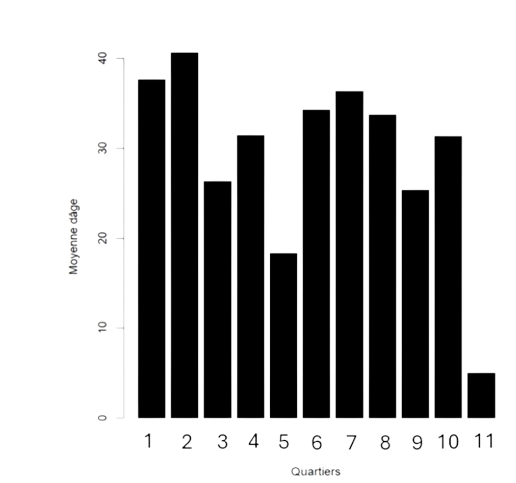

ARBRINATOR
Accueil
Bienvenue, sur Arbrinator !
Où vous allez pouvoir observer le patrimoine arboré de Saint-Quentin.
Tout d’abord, quelques chiffres sur Saint-Quentin :
A Saint-Quentin, on compte 11408 arbres recensés dont 10613 encore en place, dans 11 quartiers différents. Dont 18% sont dans le quartier Saint-Martin – Oëstres, 15,5% sont dans le quartier Remicourt et 15,3% dans le quartier du Faubourg d'Isle, qui sont les trois quartiers de la ville possédant le plus d’arbres.
On remarque que la hauteur moyenne des arbres est de 5,7 mètres si l’on prend en compte seulement les arbres encore en place. De plus la hauteur moyenne des troncs est de 3,2 mètres et une circonférence de 68cm.
On peut ainsi observer la moyenne d’âge des arbres par quartier, on remarque ainsi que les quartiers avec les moyennes d’âge les plus élevées sont les quartiers 1 (le centre-ville) et 2 (le quartier Remicourt).
Histogramme de la moyenne d'âge des arbres par quartier :
